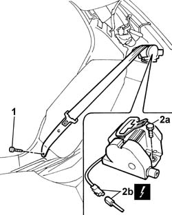

7065B09 Rear seat belt (one) with pretensioner on reel, left or right - R.R. with rear parcel shelf removed
- Path
- Procedures > 70 FITTINGS > 7065 SEAT BELTS AND ACCESSORIES > 7065B REAR SEAT BELTS > 7065B09 Rear seat belt (one) with pretensioner on reel, left or right - R.R. with rear parcel shelf removed
- Kind
- repair procedure (removal / refitting; the operation number is the code)
- Applies to
- all engines; all production periods
- Interactive page
- https://sloeber94.github.io/elrnDB-lThss/en/#/115292
Applies to: all engines; all production periods
Applies to: all engines; all production periods
 Removing
Removing
 Refitting
Refitting1. Undo the lower bolt.
2. Undo the upper bolt (2a) and disconnect the electrical connector (2b).
 | Description | Connector |
|---|---|---|
2b | Driver's side rear seat belt pretensioner | Q022 |
| Description | Connector |
|---|---|---|
2b | Passenger side rear seat belt pretensioner | Q023 |

Applies to: all engines; all production periods
- Place the pretensioner in the special cupboard resting it on a free surface.
Applies to: all engines; all production periods
Refitting
Removing- Position the rear seat belt and tighten the upper and lower fixing bolts to torque.
 | Value - daNm | Fastening | Component | Ø |
|---|---|---|---|---|
. | (upper on rear parcel shelf crossmember) 4 | Bolt | SEAT BELT REEL | 7/16" |
| Value - daNm | Fastening | Component | Ø |
|---|---|---|---|---|
. | (lower on bodyshell) 4 | Bolt | REAR SEAT BELT BAND | 7/16" |
| Description | Connector |
|---|---|---|
. | Driver's side rear seat belt pretensioner | Q022 |
| Description | Connector |
|---|---|---|
. | Passenger side rear seat belt pretensioner | Q023 |